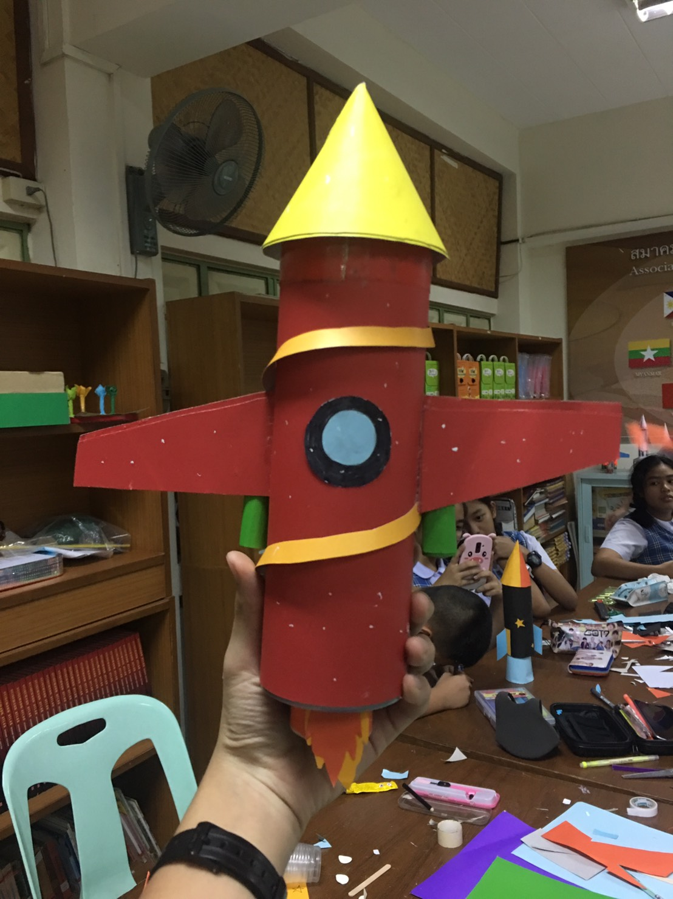
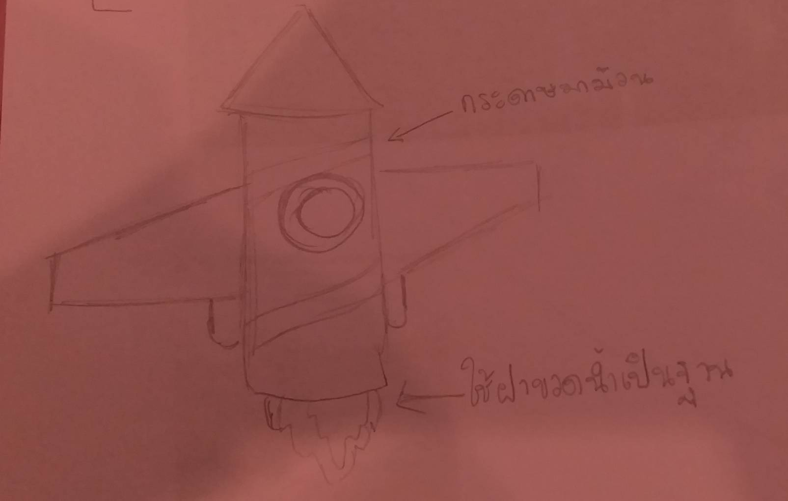

S = Science
ประโยชน์ของจรวด :
จรวด หมายถึงขีปนาวุธ, ยานอวกาศ, เครื่องบิน หรือพาหนะอื่นใดที่อาศัยแรงผลักดันของไอเสียที่มีต่อตัวจรวดในการพุ่งไปข้างหน้า โดยใช้การเผาผลาญเชื้อเพลิงในเครื่องยนต์จรวด ในจรวดทุกชนิดไอเสียจะเกิดขึ้นทั้งหมดจากเชื้อเพลิงขับดันที่บรรทุกไปด้วยภายในจรวดก่อนที่จะถูกใช้งาน จรวดเคมีสร้างพลังงานจากการเผาผลาญเชื้อเพลิงจรวด ผลจากการเผาผลาญเชื้อเพลิงและตัวอ๊อกซิไดซ์ภายในห้องเผาไหม้จะทำให้เกิดก๊าซร้อนที่มีอุณหภูมิสูงมากและขยายตัวออกไปทางหัวฉีดทำให้ก๊าซเคลื่อนที่ด้วยความเร่งในระดับไฮเปอร์โซนิก ซึ่งทำให้เกิดแรงผลักมหาศาลต่อตัวจรวดตามกฎข้อที่สามของนิวตัน (แรงกิริยาเท่ากับแรงปฏิกิริยา)โดยในทางทหารและสันทนาการมีประวัติของการใช้จรวดเป็นอาวุธและเครื่องมือในช่วงเวลานั้น
จรวดได้ถูกใช้สำหรับงานทางทหารและสันทนาการ ย้อนกลับไปอย่างน้อยศตวรรษที่ 13 ในประเทศจีน (China) ในทางทหาร, วิทยาศาสตร์และอุตสาหกรรมได้ใช้จรวดเป็นอาวุธและเครื่องมือแต่ก็ยังไม่เป็นที่แพร่หลายจนกระทั่งถึงศตวรรษที่ 20, เมื่อวิทยาการที่เกี่ยวกับจรวดได้ถือกำเนิดขึ้น เป็นการเปิดประตูสู่ยุคอวกาศ,กับการที่มนุษย์กำลังจะไปเหยียบดวงจันทร์ จรวดได้ถูกใช้สำหรับทำดอกไม้ไฟและอาวุธ, เก้าอี้ดีดตัวสำหรับนักบินและพาหนะสำหรับนำส่งดาวเทียม, นักบินอวกาศ และการสำรวจดาวเคราะห์ต่าง ๆ ในขณะที่จรวดที่ไม่ค่อยมีประสิทธิภาพนั้นจะใช้สำหรับการขับเคลื่อนด้วยอัตราเร็วที่ต่ำ ๆ, นักวิทยาศาสตร์จะเปรียบเทียบหาจรวดที่มีแรงขับเคลื่อนในระบบอื่น ๆ, ที่มีน้ำหนักเบากว่าและมีประสิทธิภาพสูงกว่า, ทำให้สามารถสร้างความเร่งในการเคลื่อนที่ของจรวดได้มากขึ้น และสามารถทำให้เคลื่อนที่ด้วยอัตราเร็วที่สูงอย่างยิ่งด้วยประสิทธิภาพที่เหมาะสม
ประโยชน์จากการทำโมเดลจรวด : ได้ใช้เวลาว่างให้เกิดประโยชน์ ฝึกให้มีความคิดสร้างสรรค์

T = Technology
อุปกรณ์ในการทำ :
1. กระดาษสี 3 แผ่น (ใช้สีไม่เหมือนกันเลยในแต่ละแผ่น)
2. เทปใส
3. เทปกาว 2 หน้า
4. กรรไกร
5. ฝาขวดน้ำ
E = Engineer
ภาพร่าง : 
วิธีทำ :
1.ทำตามแบบที่ร่างไว้ โดยเริ่มที่แกนกลางของตัวจรวดก่อน นำกระดาษสีหนึ่งมาม้วน เป็นทรงกระบอก
2.ตัดกระดาษสีอื่นที่ไม่ใช่สีเดิม มาเป็นรูปสี่เหลี่ยมเล็กๆ แล้วม้วนให้กลายเป็นรูปทรงกรวย
3.ตัดกระดาษสีเดียวกับตัวจรวดมาเป็นปีกทั้ง 2 ข้าง
4.นำกระดาษสีแผ่นสุดท้ายที่ยังไม่ได้ใช้มาตัดเป็นตัวบูสเตอร์ของจรวด ติดไว้ข้างๆ ลำตัวของจรวด
5.ทำตัวไอพ่นของจรวด โดยการตัดกระดาษเป็นรูปไฟ แล้วนำมาติดกัวฝาขวดน้ำ เพื่อเป็นการยึด
6.เมื่อทำขั้นตอนตั้งแต่ 1-5 เสร็จแล้ว ก็นำทุกส่วนมาประกอบกันให้เรียบร้อย
7.ขั้นตอนสุดท้าย ประดับตกแต่งจรวดของคุณตามใจชอบ
แค่นี้ก็เรียบร้อยแล้ว!!!!!!!!
M = Mathematics
คำนวนค่าใช้จ่ายทั้งหมด!!!!!!!
กระดาษ 3 แผ่น ราคา 9 บาท (แผ่นละ 3 บาท)
เทปใส,เทปกาว 2 หน้า,กรรไกร มีอยู่แล้ว เพราะฉะนั้น ไม่ต้องเสียเงิน
ส่วนฝาขวดน้ำ ก็ไปซื้อน้ำมาขวดมาในราคา 7 บาท ดื่มให้หมด แล้วนำตัวของไปทิ้งลงในถังสำหรับขวดพลาสติก เก็บฝาขวดไว้.
รวมค่าใช้จ่ายทั้งหมด : 16 บาทเท่านั้น!!!!!!!!!!!!
สำหรับวันนี้ เราขอจบการนำสนอข้อมูลเพียงเท่านี้ค่ะ หวังว่าข้อมูลพวกนี้จะเป็นประโยชน์ในการทำโมเดลจรวดของทุกท่านนะคะ :)
ขอบคุณค่ะ